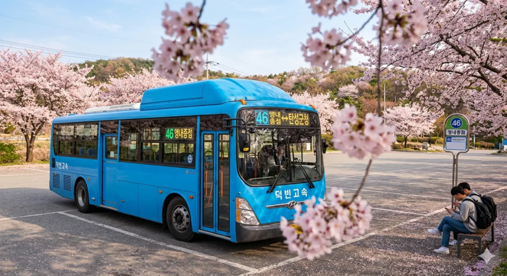

급행
간선
순환
지선
광역
좌석
마을
공항
투어
[ 펼치기 · 접기 ]
간선버스 노선 번호 (전체)
11
11-1
12
13
14
15
16
17
18
19
21
22
22-1
23
24
25
26
27
28
29
31
32
33
33-1
34
35
36
37
38
39
41
42
43
45
46
47
48
49
51
52
53
54
56
57
58
59
61
62
63
64
65
66
66-1
67
68
69
71
72
73
74
75
76
77
77-1
78
79
81
82
83
84
85
86
87
88
88-1
89
91
92
93
94
95
96
97
98
| 기점 | 앵내종점 |
|---|
| 종점 | 탄성군청 |
|---|
| 운수사 | 덕빈고속 |
|---|
| 배차간격 | 평일 20~25분 / 주말 28~32분 |
|---|
| 인가대수 | 7대 |
|---|
효빈 버스 46은 효빈광역시 탄성군 도변읍(앵내)과 탄성읍(군청)을 잇는 간선버스 노선이다.
탄성군 서부 주민들의 행정 중심지 접근성을 책임지는 중요한 노선이며, 최근에는 특이한 지명으로 인해 서브컬처 팬들의 성지순례 코스로도 알음알음 알려져 있다.
1. 노선 정보
 |
| 앵내종점에서 대기 중인 46번 버스 |
|
| 기점 | 탄성군 도변읍 앵내리 (앵내종점) |
종점 | 탄성군 탄성읍 공리 (탄성군청) |
| 종점행 | 첫차 | 05:20 |
기점행 | 첫차 | 05:28 |
| 막차 | 22:32 |
막차 | 22:37 |
| 기점 | 탄성군 탄성읍 공리 (탄성군청) |
종점 | 탄성군 도변읍 앵내리 (앵내종점) |
| 종점행 | 첫차 | 05:28 |
기점행 | 첫차 | 05:20 |
| 막차 | 22:37 |
막차 | 22:32 |
2. 개요
탄성군의 서부 지역인 도변읍 앵내리와 행정 중심지인 탄성읍을 잇는 핵심 간선 노선이다. 탄성군의 동서를 가로지르며, 도변역에서 4호선과 5호선, 탄성역에서 1호선과 연계되어 지역 주민들의 발이 되어준다.
특히 기점인 앵내리(櫻内里)의 지명이 서브컬처 팬들 사이에서 화제가 되며 유명세를 탔다.
3. 정류장 목록
4. 특징
- 행정 연계: 탄성군청으로 가는 주요 길목을 담당하며, 공무원들과 민원인들의 이용이 많다.
- 지명 유래: 앵내리(櫻内里)는 '벚꽃이 만발한 마을 안쪽'이라는 뜻을 가지고 있으며, 실제로 봄이 되면 종점 주변 벚꽃길이 장관을 이룬다.
- 오타쿠 성지: 아래 여담 항목에서 자세히 서술하겠지만, 러브 라이브! 선샤인!!의 등장인물과 이름이 같다는 이유로 팬들의 발길이 이어지고 있다.
6. 여담
※ 경고: 본 문단은 검증되지 않은 서브컬처 관련 내용을 포함하고 있습니다.
재미로만 봐주시고, 실제 지역 주민들에게 피해가 가지 않도록 주의합시다.
-
앵내리(櫻内里)와 사쿠라우치 리코:
기점인 '앵내리'의 한자 표기 櫻内(앵내)가 일본의 아이돌 프로젝트 러브 라이브! 선샤인!!의 등장인물 사쿠라우치 리코(桜内 梨子)의 성(姓)과 완전히 일치한다.
이 사실이 알려지자 전국의 리코 팬들이 성지순례차 앵내종점을 방문하여, 정류장 표지판 앞에서 피아노를 치는 시늉을 하거나 굿즈를 들고 인증샷을 찍는 기현상이 벌어지고 있다.
-
시즈쿠 버스 vs 리코 마을:
효빈 간선버스의 고유색인 #01B7ED (하늘색)는 오사카 시즈쿠의 상징색이라 '시즈쿠 버스'로 불리는데,
하필 이 파란 버스가 '리코(앵내)' 마을로 들어가는 모양새가 되어버렸다.
???: "시즈쿠가 리코 선배네 집에 놀러가는 노선인가요?"
이에 대해 팬덤에서는 "러브라이브 세계관 대통합 노선"이라며 찬양하고 있다. 정작 버스 기사님들은 주말마다 카메라 들고 오는 청년들을 보며 "여가 뭐 볼 게 있다고 자꾸 오는지 모르겠네"라며 의아해하신다.
-
4호선, 5호선 환승:
도변역에서 4호선(주황색, 타카미 치카?)과 5호선(빨간색, 쿠로사와 다이아?)으로 환승이 가능해, 억지로 끼워 맞추면 Aqours 멤버들의 색상을 다수 만날 수 있는 노선이라는 우스갯소리도 있다.
또한 경유지 중 하나인 '루비역'은 5호선 환승역인데, 이 또한 쿠로사와 루비와 이름이 같아 성지순례 코스에 포함되기도 한다. 앵내(리코)에서 출발해 루비(루비)를 거치는 갓-노선